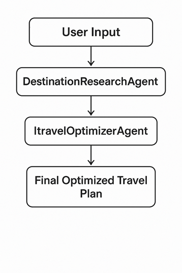
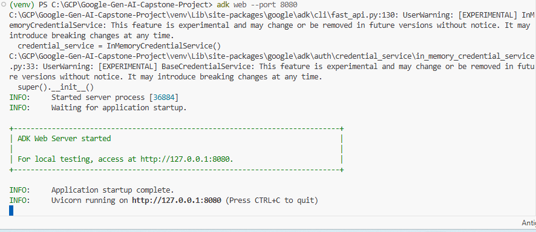
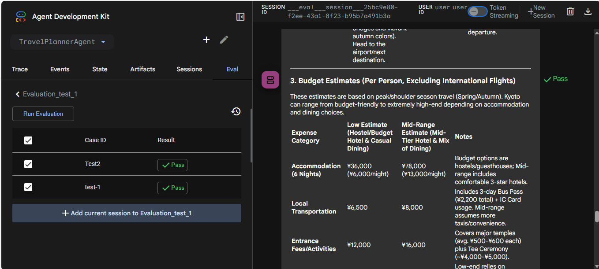

JourneyWeaver is an advanced AI-powered travel planning system built using the Google Gen AI Agent Development Kit (ADK). It employs a sequential multi-agent architecture to research destinations, build detailed itineraries, and optimize travel plans with practical advice.
The system utilizes a Sequential Agent pattern, where the output of one agent serves as the context/input for the next.

DestinationResearchAgent:
destination_research).ItineraryBuilderAgent:
destination_research data.travel_itinerary).TravelOptimizerAgent:
travel_itinerary.Invocation Flow:
Sequential Agent Execution:
.png)
Clone the Repository:
git clone <repository-url>
cd TravelPlannerAgent
Create Virtual Environment:
python -m venv venv
source venv/bin/activate # On Windows: venv\Scripts\activate
Install Dependencies:
pip install -r requirements.txt
Environment Configuration:
Create a .env file in the root directory:
GOOGLE_API_KEY=your_google_api_key_here
PROJECT_ID=your_gcp_project_id
LOCATION=us-central1
The agent is initialized in agent.py. You can run it directly or integrate it into a larger
application via the Runner.
from agent import runner
# Example execution
response = runner.run(
input_text="Plan a 5-day trip to Kyoto, Japan for a couple interested in history and food."
)
print(response)
agent.py: Main entry point.
logging: Configures debug logging.retry_config: Defines HTTP retry logic for robustness.AGENT_MODEL: Configures the Gemini model (currently
gemini-2.5-flash-lite-preview-09-2025).
session_service: Manages conversation state (currently
InMemorySessionService).
DestinationResearchAgent,
ItineraryBuilderAgent, and TravelOptimizerAgent.
root_agent: The SequentialAgent orchestrating the workflow.runner: The ADK runner instance.To deploy this agent as a scalable microservice:
Create a Dockerfile in the root:
FROM python:3.9-slim
WORKDIR /app
COPY . .
RUN pip install --no-cache-dir -r requirements.txt
# Assuming you wrap the runner in a web server (e.g., FastAPI)
# CMD ["uvicorn", "main:app", "--host", "0.0.0.0", "--port", "8080"]
gcloud builds submit --tag gcr.io/YOUR_PROJECT_ID/travel-planner-agent
gcloud run deploy travel-planner-agent \
--image gcr.io/YOUR_PROJECT_ID/travel-planner-agent \
--platform managed \
--region us-central1 \
--allow-unauthenticated
The current implementation uses InMemorySessionService, which is suitable for single-instance
deployments. For high scalability:
InMemorySessionService with a persistent store
like Firestore or Redis. This allows any instance to handle any user request.
# Example conceptual change
from google.adk.sessions import FirestoreSessionService
session_service = FirestoreSessionService(project_id="...")
DestinationResearchAgent results (e.g., using
Redis) to reduce API costs and latency for popular destinations.| Issue | Possible Cause | Solution |
|---|---|---|
| 429 Too Many Requests | API quota exceeded. | The retry_config handles transient errors, but you may need to request a quota increase. |
| Context Limit Exceeded | Itinerary too long. | Reduce the scope of the request or switch to a model with a larger context window (e.g., Gemini 1.5 Pro). |
| Empty Response | Search tool failure. | Verify internet connectivity and Google Search tool configuration. |
Q: Can I add more agents?
A: Yes, simply define a new Agent in agent.py and add it to the sub_agents
list in the root_agent definition.
Q: How do I change the AI model?
A: Update the model parameter in the AGENT_MODEL initialization in agent.py.
Q: Does it support other languages? A: Yes, Gemini is multilingual. You can prompt the agent in other languages, or add a system instruction to always output in a specific language.
Q: Is the data persisted?
A: Currently, no. The InMemorySessionService is volatile. See the Scalability section
for persistence options.
The agent can be monitored and tested using the ADK Web Console:

Performance metrics and evaluation results:
